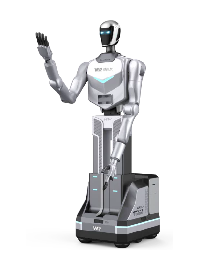

VB2
A wheeled humanoid robot from China.
Sources retrieved: 6 October 2026 (A)
- Intended use, per the manufacturer
- Not stated
- Indicative price
- Not stated

Manufacturer's rendering.
Specifications
6/32 specifications disclosed 26 not stated
26 fields hidden
How to read the figuresShow guideClose
- not statedNo source
- noStated by a source
- 0Reported as zero
- ASource
- A*Source with a caveat (select it)
- CERecords only what the manufacturer states regarding CE marking.
Select a source marker for source details and notes.
Physical3/13 disclosed
Power1/5 disclosed
Sensing and autonomy2/6 disclosed
Payload and expansion0/3 disclosed
Commercial0/1 disclosed
Compliance & certifications0/4 disclosed
Against the field
Each strip holds every robot of this type in the guide that states the figure, one bar per group of values. Further right means a larger figure, not a better robot. A taller bar means more robots in that group.
Runtime
240–360minNote: load condition not stated
106 wheeled humanoids state a runtime
VB2 states a range, not one figure, so it is shown as a band and not ranked against the others. 31 state only a bound (≥ or ≤) and are not ranked.
Max speed
0–4.32km/h0–2.68mphOur conversion from 0–1.2 m/s. The manufacturer does not state an imperial figure itself, so the conversion has no source of its own.
98 wheeled humanoids state a top speed
VB2 states a range, not one figure, so it is shown as a band and not ranked against the others. 15 state only a bound (≥ or ≤) and are not ranked.
Notes
Lanxin lists VB2 among its humanoid robots, with four-wheel omnidirectional drive.
The producer gives an operating height of 0.4 to 2 m.
The rotation diameter is 760 mm.
Sources
One line per source, not per figure: a source has one retrieval date.
- Alanxinrobotics.com/humanoid-robots/vb2-2/Main source. Retrieved 6 October 2026